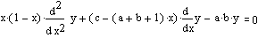
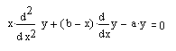

Hypergeometric Functions |
fhyper(a, b, c, x) Returns the value of the Gauss hypergeometric function, 2F1(a, b; c; x). Calculated by series expansion.
mhyper(a, b, x) Returns the value of the confluent hypergeometric function, 1F1(a; b; x) or M(a, b, x). Calculated by series expansion.
| Gauss: |  |
| Confluent: |  |
Many functions are special cases of the hypergeometric functions. For example:
|
ln(1 + x) = x · fhyper(1, 1, 2, –x) |
exp(x) = mhyper(1,1,x) |
|
asin(x) = x · fhyper(.5, .5, 1.5, x2) |
exp(x) · sinh(x) = x · mhyper(1,2,2 · x) |
as well as some of the more complicated functions, like Legendre polynomials.